(17) Kyoto16: residual error look whitened?#
host = mach, device = cuda:3
Motivation:
using this model: gaussian-sigmoid: z-256, (16, 32.0)
device_idx = 3
device = f'cuda:{device_idx}'
print(f"device: {device} ——— host: {os.uname().nodename}")
device: cuda:3 ——— host: mach
Load trainer#
### (8, 16.0) --- gold standard
# a = 'gaussian_sigmoid_Kyoto16_t-8_z-[256]_u-(7,2),du-(7,3)_<grad|lin>'
# b = 'b200-ep2000-lr(0.005)_beta(16:0.1)_gr(500)_(2025_03_20,18:27)'
### Best looking gompertz model
a = 'gaussian+gompertz_Kyoto16-bw_t-8_b-16_k-[128]_u-(7,2),du-(7,3)'
b = 'b200-ep2000-lr(0.005)_gr(300)_(2025_04_13,17:53)'
# a = 'gaussian+gompertz_Kyoto16-bw_t-32_b-64_k-[256]_u-(7,2),du-(7,3)'
# b = 'b200-ep2000-lr(0.005)_gr(300)_(2025_04_14,23:48)'
tr, meta = load_model(pjoin(a, b), device, strict=False)
meta['checkpoint']
2000
u0 = tonp(tr.model.layer.u_init[0].squeeze())
u1 = tonp(tr.model.layer.u_init[1].squeeze())
tr.model.show(order=np.argsort(u0), nrows=4, dpi=400)
tr.model.show(order=np.argsort(u0), nrows=4, dpi=400, method='abs-max');
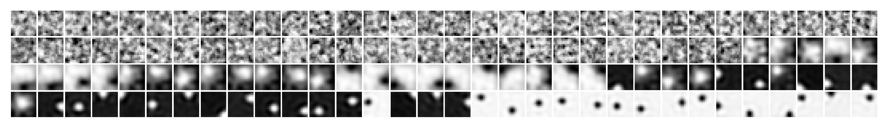
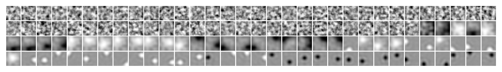
### Was: logistic
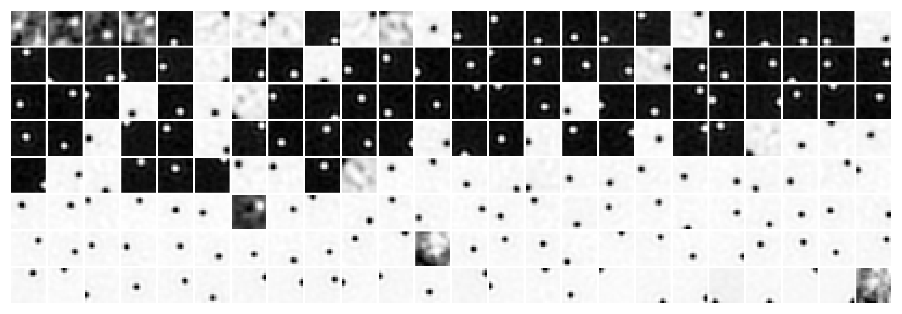
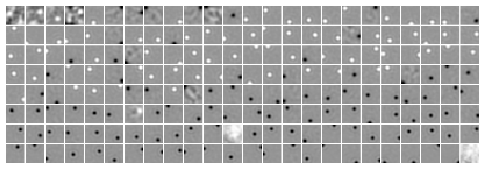
### Was: gold standard (8, 16.0, 256)
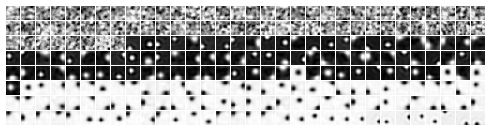
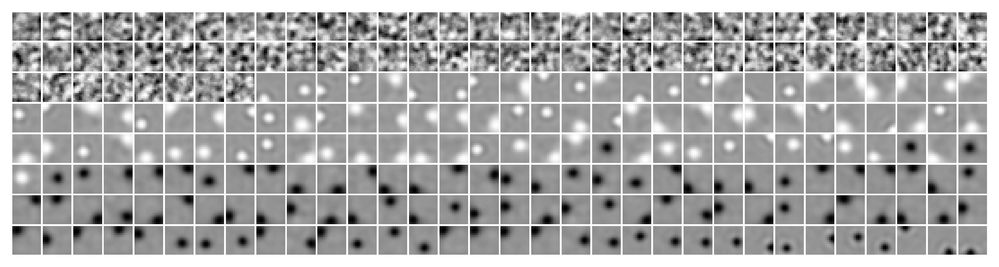
tr.cfg.batch_size = 3000
tr.setup_data()
%%time
t_total = 1000
true, pred, error = [], [], []
for x, *_ in tqdm(iter(tr.dl_vld)):
feeder = tr.get_feeder(x)
for t in range(t_total):
tr.model.update_time(t)
inpt = feeder[t]
output = tr.model.xtract_ftr(inpt)
if (t + 1) == t_total:
true.append(inpt.flatten(start_dim=1))
pred.append(tr.model.layer.conditional.loc)
error.append(tr.model.layer.pred_error(
x=inpt, weighted=False))
del output
torch.cuda.empty_cache()
import gc
gc.collect()
true = torch.cat(true)
pred = torch.cat(pred)
error = torch.cat(error)
error.shape
100%|█████████████████████████████████████████████| 4/4 [00:07<00:00, 1.76s/it]
CPU times: user 7.06 s, sys: 115 ms, total: 7.17 s
Wall time: 7.17 s
torch.Size([9821, 256])
# order: high contrast
var = tonp(torch.var(true, dim=1))
order = np.argsort(var)[::-1]
# get whitened data
_, whitened, _ = make_dataset('Kyoto16-wht', device)
whitened = whitened.tensors[0].flatten(start_dim=1)
whitened.shape
torch.Size([9821, 256])
_plot_selected_samples()
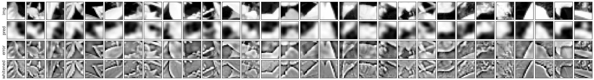
### Was: logistic
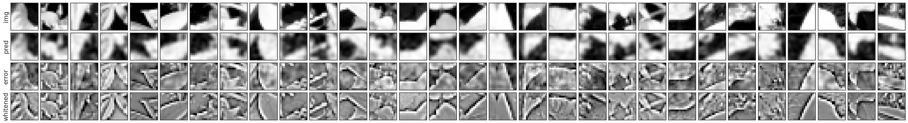
### Was: gold standard (8, 16.0, 256)
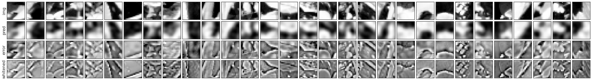
### Was: (16, 32.0)
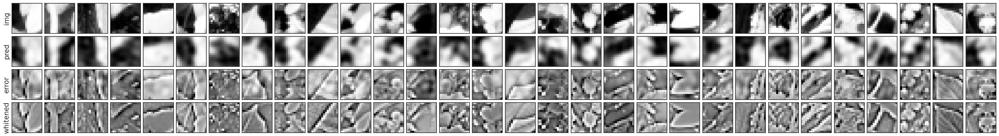
_plot_sample_hists()
### Was: logistic
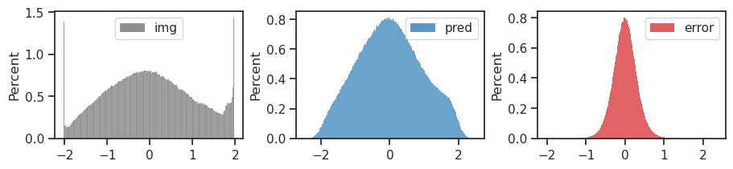
### Was: gold standard (8, 16.0, 256)
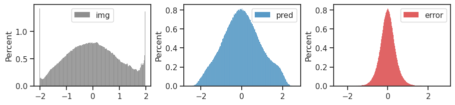
### Was: (16, 32.0)
_plot_power_spectrum()
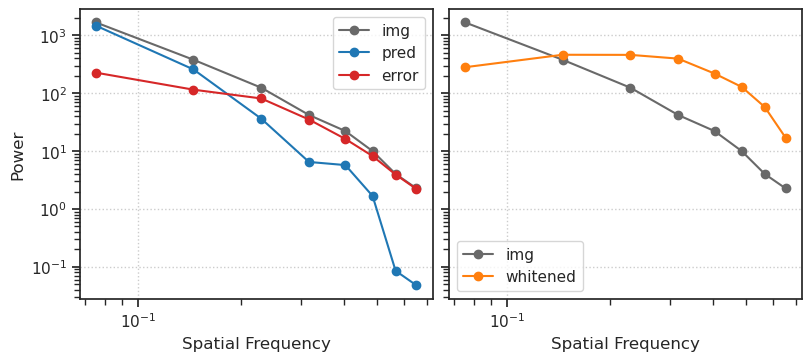
### Was: logistic
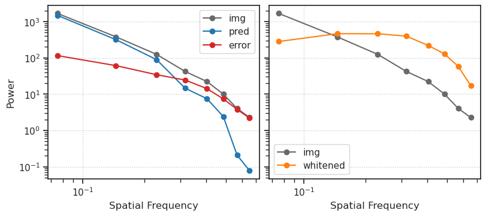
### Was: gold standard (8, 16.0, 256)
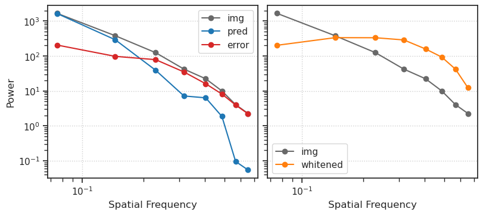
### Was: (16, 32.0)
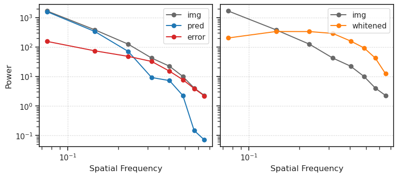
Activation params#
u0 = tonp(tr.model.layer.u_init[0].squeeze())
u1 = tonp(tr.model.layer.u_init[1].squeeze())
gain = tonp(tr.model.layer.activation.log_gain.exp().squeeze())
b = tonp(tr.model.layer.activation.log_b.exp().squeeze())
c = tonp(tr.model.layer.activation.log_c.exp().squeeze())
# alpha = tonp(tr.model.layer.activation.log_alpha.exp().squeeze())
# beta = tonp(tr.model.layer.activation.beta.squeeze())
order = np.argsort(b)
tr.model.show(order=order, nrows=4, dpi=400, method='abs-max');
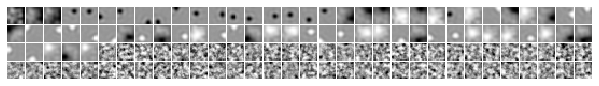
tr.model.layer.activation.show(order[4], x_range=(-20, 20));
tr.model.layer.activation.show(order[40], x_range=(-20, 20));
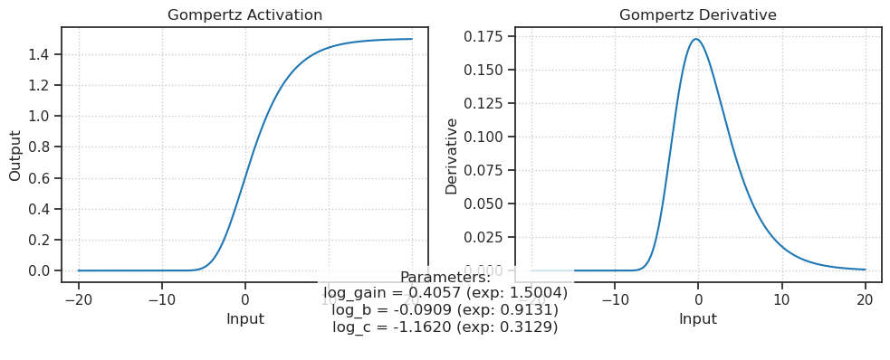
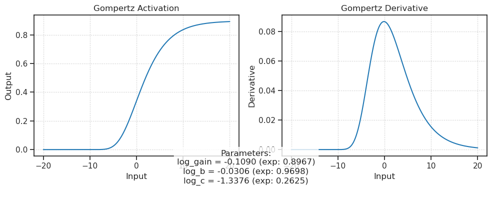
Movie: first few t#
t in range(50)
# get whitened data
_, whitened, _ = make_dataset('Kyoto16', device)
whitened = whitened.tensors[0].flatten(start_dim=1)
whitened = whitened[torch.from_numpy(order.copy())]
whitened = whitened[:500]
error.shape, whitened.shape
(torch.Size([500, 256]), torch.Size([500, 256]))
# get stimulus
x = tr.dl_vld.dataset.tensors[0]
x = x[torch.from_numpy(order.copy())]
x = x[:500]
true = x.flatten(start_dim=1)
x.shape, true.shape
(torch.Size([500, 1, 16, 16]), torch.Size([500, 256]))
# xtract
output = tr.model.xtract_ftr(
feeder=tr.get_feeder(x),
seq=range(1000),
return_extras=['conditional'],
).stack()
for t in range(30):
print(f"t = {t}")
conditional = output['conditional'][str(t)]
pred = conditional.loc
error = true - pred
_plot_selected_samples(select_from=range(500))
t = 0
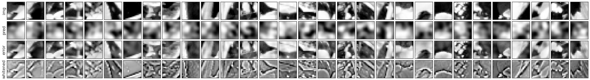
t = 1
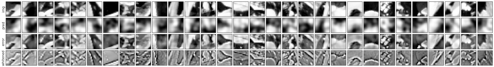
t = 2
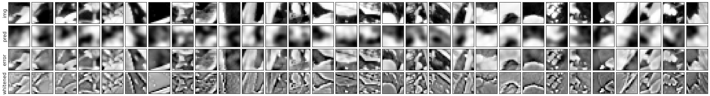
t = 3
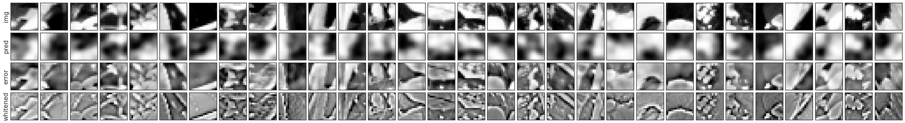
t = 4
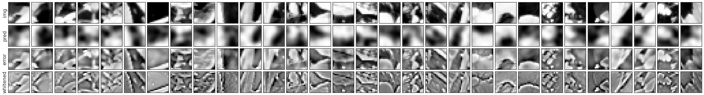
t = 5
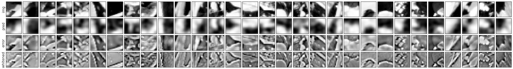
t = 6
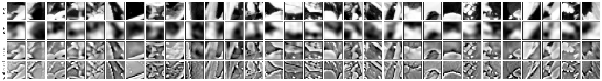
t = 7
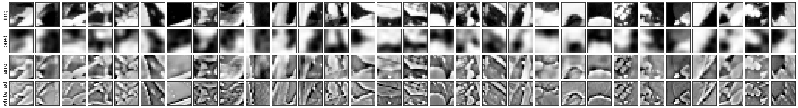
t = 8
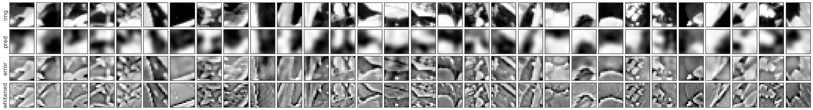
t = 9
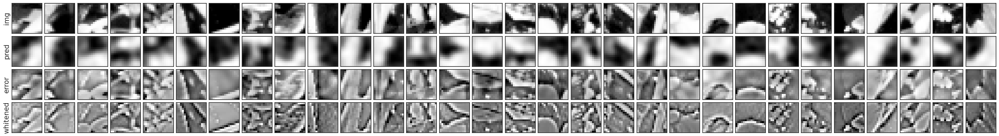
t = 10
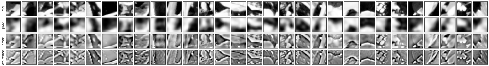
t = 11
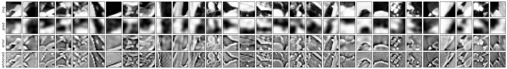
t = 12
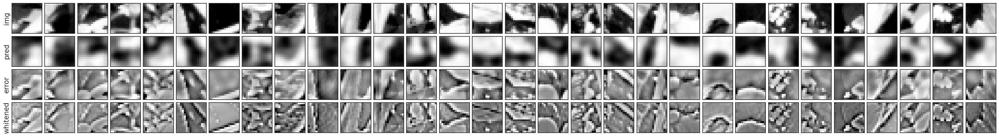
t = 13
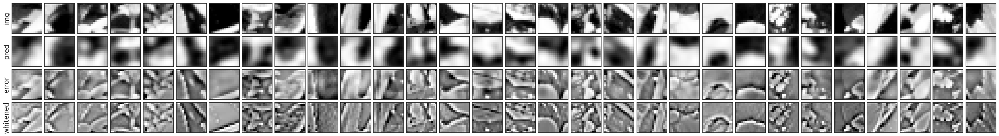
t = 14
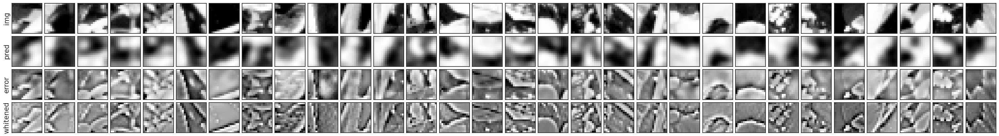
t = 15
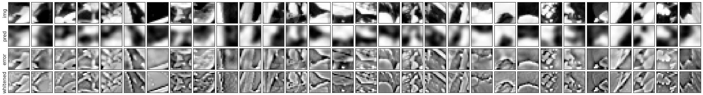
t = 16
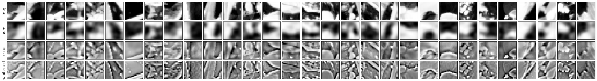
t = 17
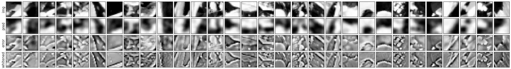
t = 18
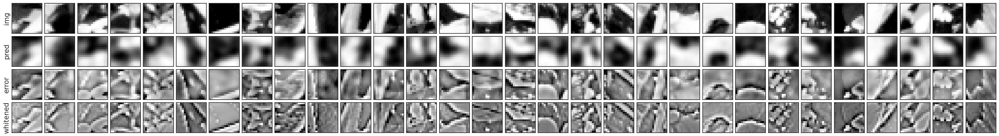
t = 19
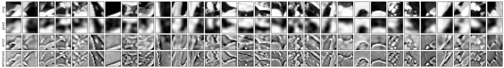
t = 20
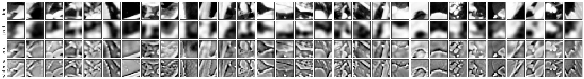
t = 21
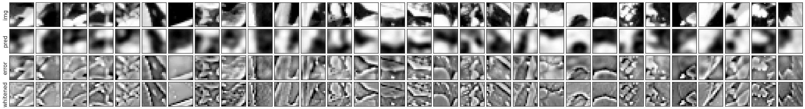
t = 22
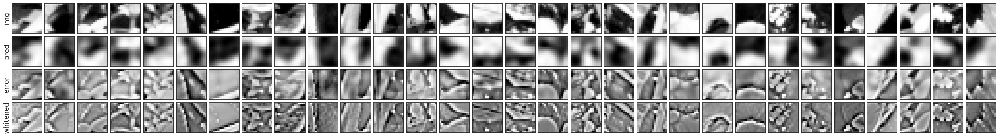
t = 23
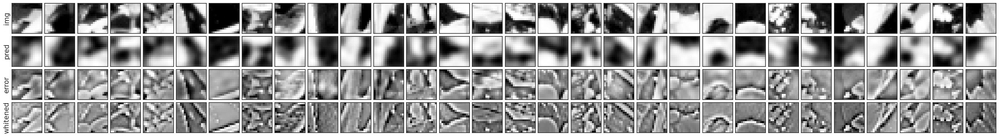
t = 24
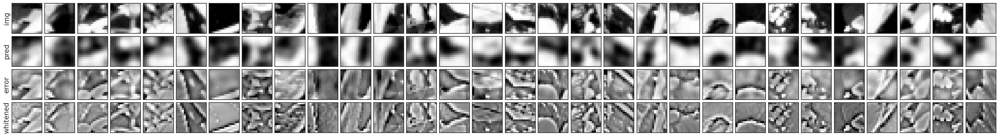
t = 25
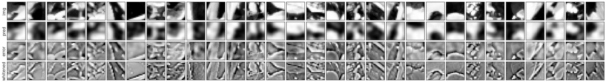
t = 26
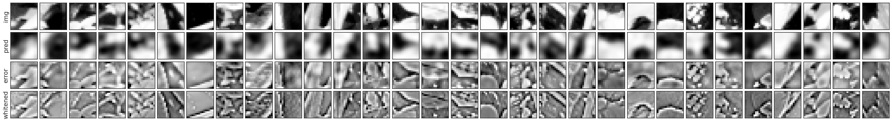
t = 27
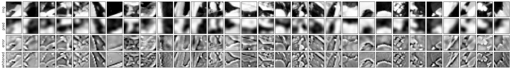
t = 28
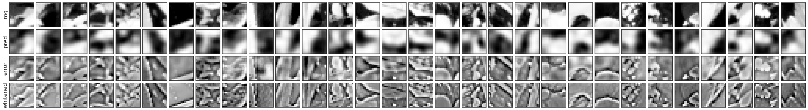
t = 29
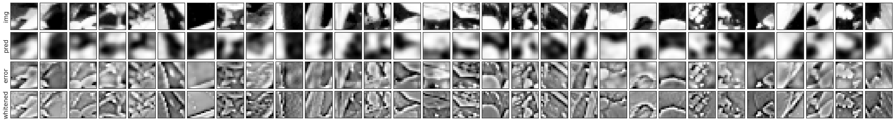
corrs = []
for t in range(1000):
conditional = output['conditional'][str(t)]
pred = conditional.loc
corr = sp_stats.pearsonr(
tonp(pred.ravel()),
tonp(whitened.ravel()),
)
corrs.append(corr.statistic)
fig, ax = create_figure()
ax.plot(range(1, len(corrs) + 1), corrs)
ax.set(xscale='log')
plt.show()
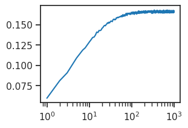
tmp = tonp(tmp.ravel())
sns.histplot(tmp, color='C3');
mean = np.mean(tmp)
std = np.std(tmp)
# Fit Gaussian
x = np.linspace(min(tmp), max(tmp), 1000)
pdf = sp_stats.norm.pdf(x, mean, std)
# Test normality (null hypothesis: data comes from normal distribution)
stat, p = sp_stats.shapiro(tmp)
is_normal = p > 0.05
# Visualization
plt.hist(tmp, density=True, alpha=0.6, bins=70)
plt.plot(x, pdf, 'r-')
plt.text(0.05, 0.95, f'p-value: {p:.4f}\nNormal: {is_normal}', transform=plt.gca().transAxes)
plt.show()
print(f"Shapiro-Wilk test: statistic={stat:.4f}, p-value={p:.4f}")
print(f"Data is {'likely normal' if is_normal else 'not normal'}")
Shapiro-Wilk test: statistic=0.9938, p-value=0.0000
Data is not normal